Crio experiências digitais que vendem.
De campanhas de tráfego, estratégias de negócio até e-commerces/sites completos.
Vivo no Rio de Janeiro. Conheça meu portfolio
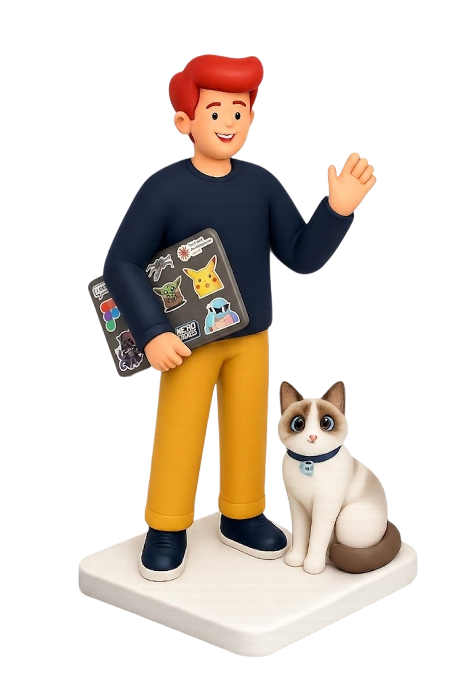
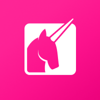
Estudante de IA/UX Design no Programa UX Unicórnio
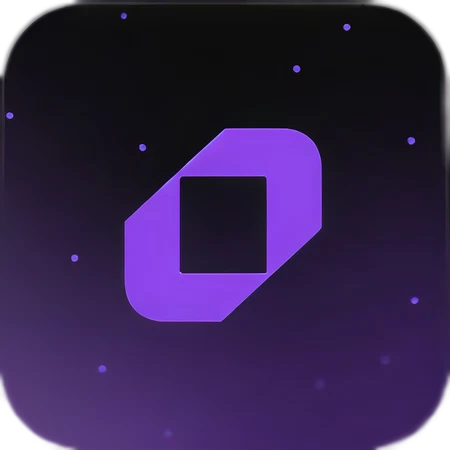
Estudante de UI Design no Design Boost
Adquiri Inglês Fluente em 3 anos
Espanhol Básico em 1 ano na Yes Idiomas
Case 01
CRO é a taxa de conversão: a cada 100 pessoas que visitam o site, quantas fazem uma compra.
Fui o único responsável por este projeto. Da pesquisa à implementação, sem agência, sem equipe, sem terceirização técnica.
Problemas resolvidos
"Vendedor trabalhando até a noite para vender mais, leads chegando mas não convertendo, e zero visibilidade sobre o porquê."
Pesquisa qualitativa (survey com clientes), pesquisa quantitativa (experimento de CRO) e diagnóstico dos 3 problemas com resultados reais.
Meu papel: Conduzi toda a pesquisa sozinho. Realizei pesquisa quantitativa (experimento de CRO com integração do serviço de montagem), pesquisa qualitativa (survey com clientes segmentados e Matriz CSD), coletei dados via GA4 e Hotjar, fiz a desk research e identifiquei os 3 problemas prioritários. Tudo isso sem apoio de agência ou equipe.
Pesquisa Quantitativa
🟨 Hipótese
Se integrarmos o serviço de montagem ao fluxo de compra, reduziremos o risco de comprar sem montador da loja por parte do cliente e aumentaremos significativamente o CRO.
🟩 Experimento: Novembro 2025
O experimento foi iniciado na jornada de compra no WhatsApp e, em seguida, foi feito um projeto de implementação no site. Detalhes sobre a precificação do serviço de montagem estão no próximo passo: Estratégia & Arquitetura.
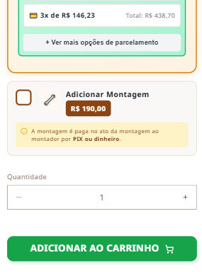
📈 Resultado observado
CRO no site: de 0,45% para 1,23%, um aumento de 173%.
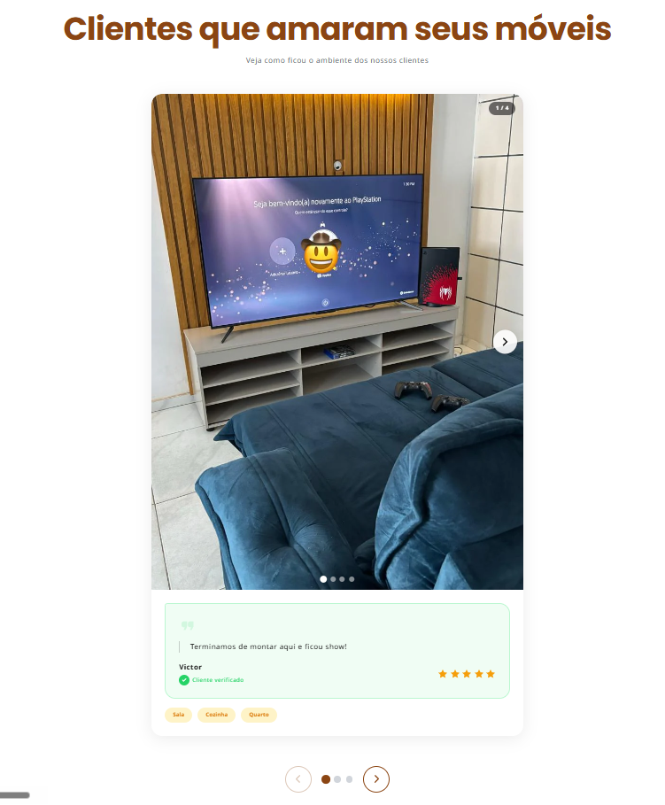
Pesquisa Qualitativa
Matriz CSD: Ponto de partida
Participantes: 3 clientes segmentados
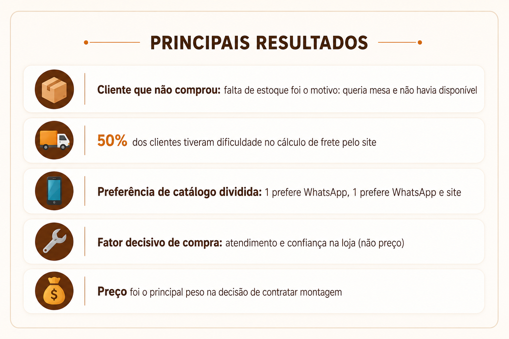
Principal aprendizado
O site exibe todos os móveis como disponíveis, mas a verificação real de estoque é feita pelo vendedor após a compra, criando fricção e frustrando clientes. A próxima evolução é integrar o estoque das fábricas parceiras ao site em tempo real.
Próximos passos da pesquisa
Survey em andamento. O objetivo é ampliar para mais participantes e cobrir os segmentos que ainda não responderam: clientes que compraram só pelo WhatsApp e clientes que tiveram gargalo no atendimento. A pesquisa segue aberta e será atualizada conforme novos dados chegarem.
Solução aplicada
50% dos clientes tiveram dificuldade no cálculo de frete. A partir desse dado, construímos dois fallbacks para não perder a venda por causa de um erro de CEP.
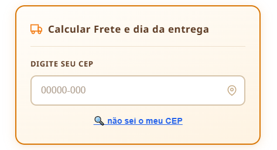
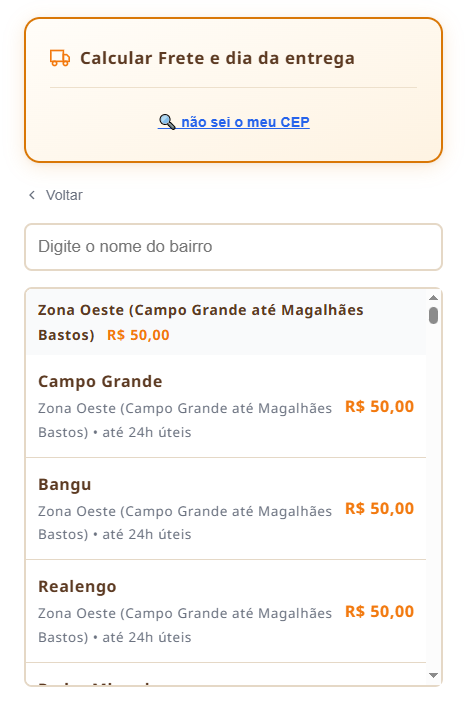
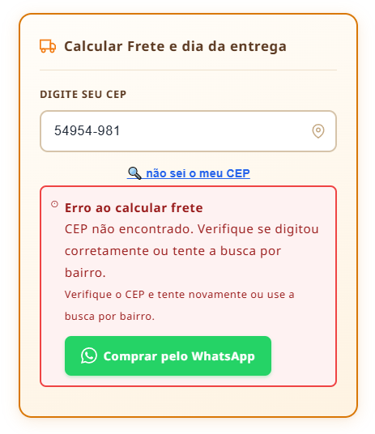
Lógica da arquitetura
CEP reconhecido? Orçamento automático no site. CEP desconhecido? Cliente envia pelo WhatsApp e o vendedor responde. Nenhum cliente fica sem resposta por falha técnica.
UX Writing — Vocabulário dos Clientes
Formada a partir de 3 anos de atendimento direto pelo WhatsApp como vendedor comissionado. As palavras mais frequentes dos clientes guiaram as decisões de copy do site, dos criativos e do atendimento automatizado.
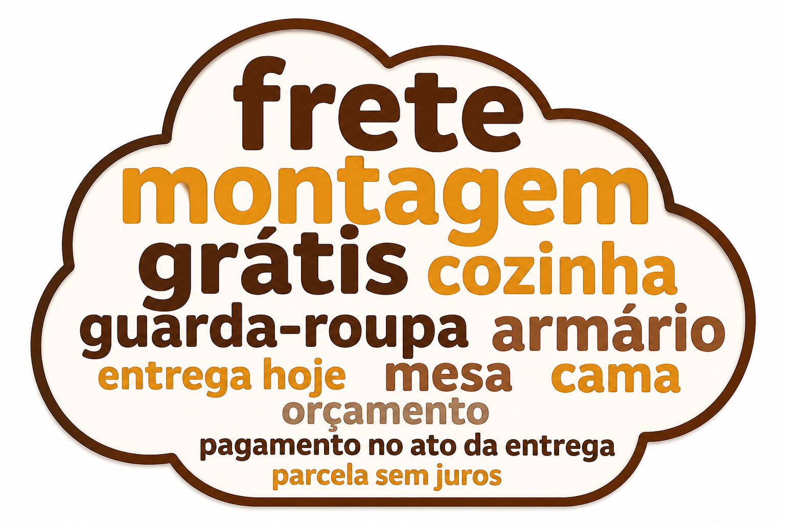
Como foi usado no produto
Problema 01
Atendimento manual no WhatsApp até a noite atendendo cliente para fechar venda.
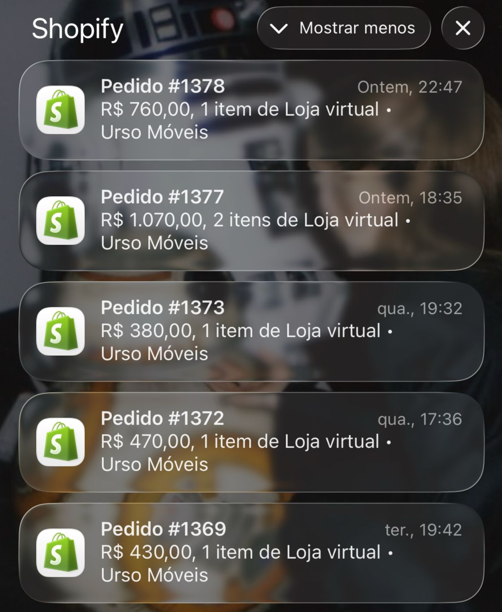
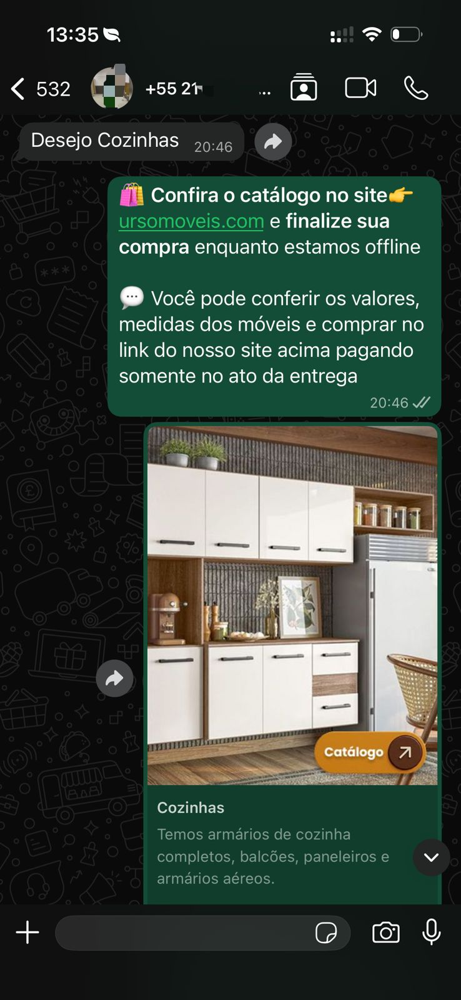
Problema 02
Desk research + benchmark revelaram que clientes buscam ambientes completos e que montagem é diferencial decisivo.
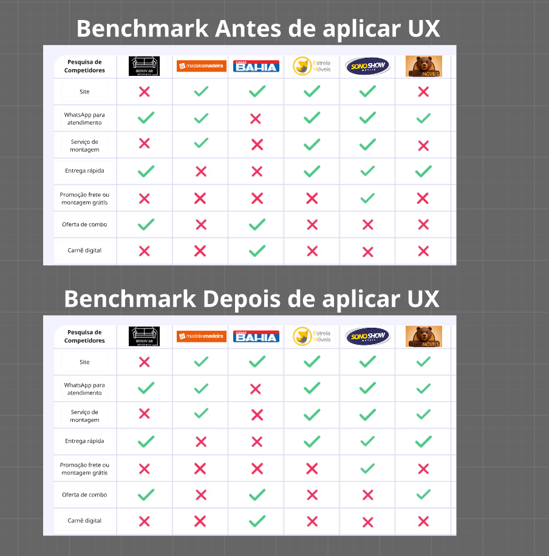
Insights da desk research
Análise construída com dados internos da Urso combinados com referências públicas do setor moveleiro brasileiro: IBGE, IEMI, Sebrae, ABIMÓVEL e portais especializados.
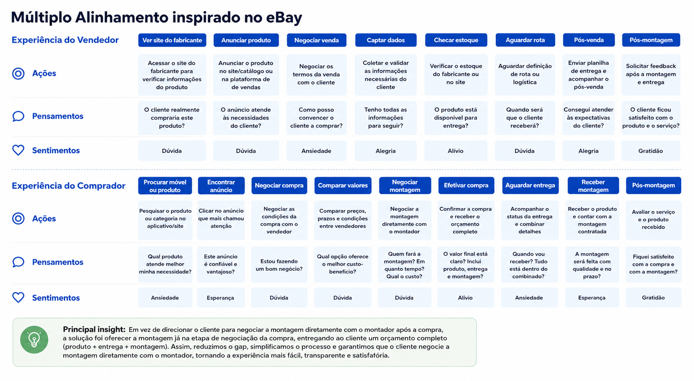
principal insight
Oferecer montagem já na negociação: produto + entrega + montagem num orçamento único. Reduz o gap e simplifica a decisão do cliente.
Problema 03
Nenhum acompanhamento de comportamento para embasar decisões de design e priorização de melhorias.
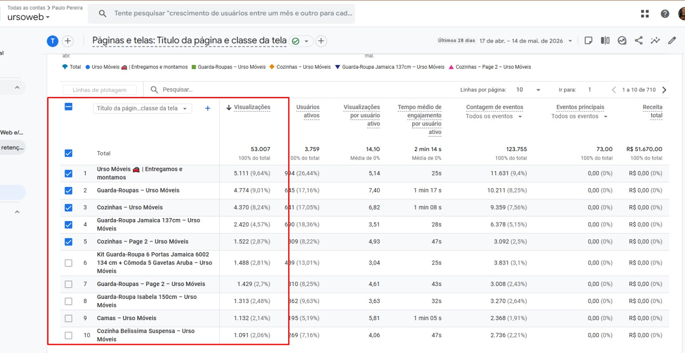
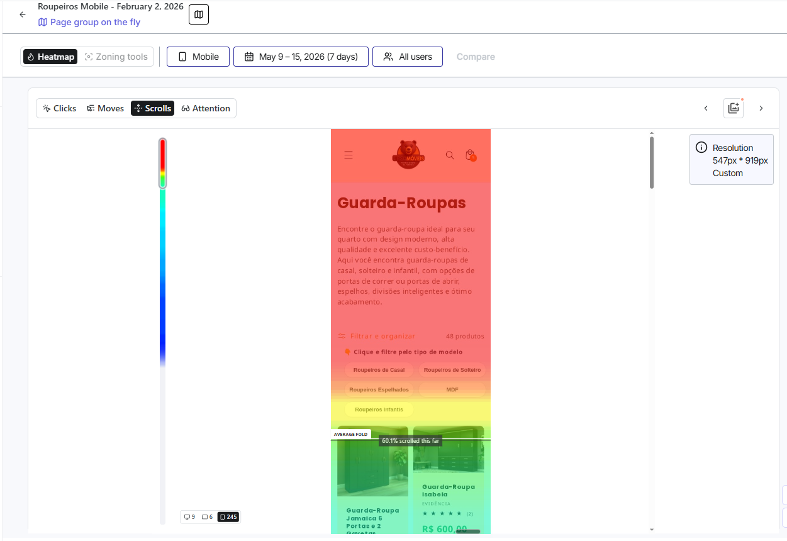
diagnóstico
O texto SEO extenso no topo da página empurrava os produtos para baixo do fold, escondendo o catálogo logo na primeira visão do usuário.
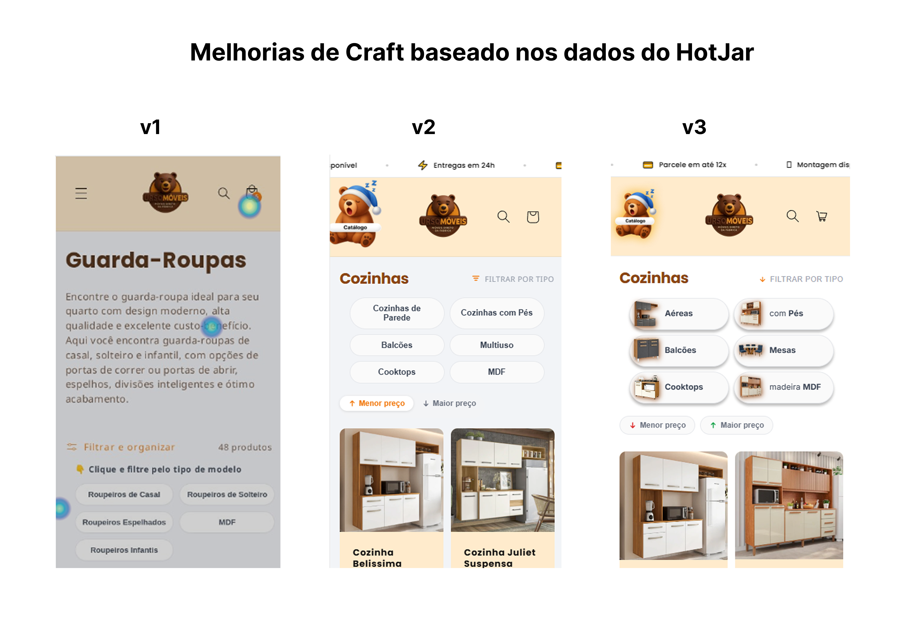
👆 Clique na imagem para ampliar · arraste para o lado para ver todas as versões
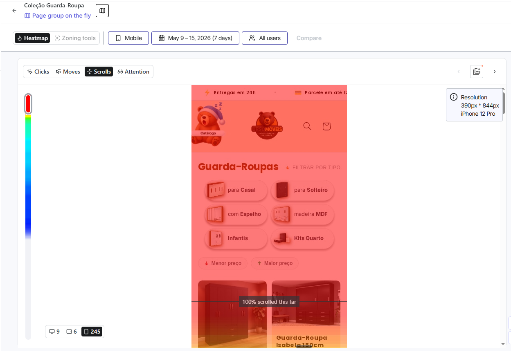
decisão técnica
O texto SEO foi ocultado visualmente na interface mas permanece ativo no HTML, mantendo o ranqueamento nos buscadores sem prejudicar a experiência do usuário.
Estruturando o modelo de negócio e a lógica de conversão.
Meu papel: Atuei como estrategista de negócio. Construí os 6 artefatos (BMC, VPC, Funil, Matriz, Priorização e apresentação para os donos) para estruturar o modelo antes de tocar em qualquer interface. Conduzi a reunião de alinhamento com os donos da Urso, que viabilizou a implementação do serviço de montagem.
Artefato 01
Modelo de negócio completo: parceiros, atividades chave, proposta de valor, canais, segmentos e estrutura de custo.
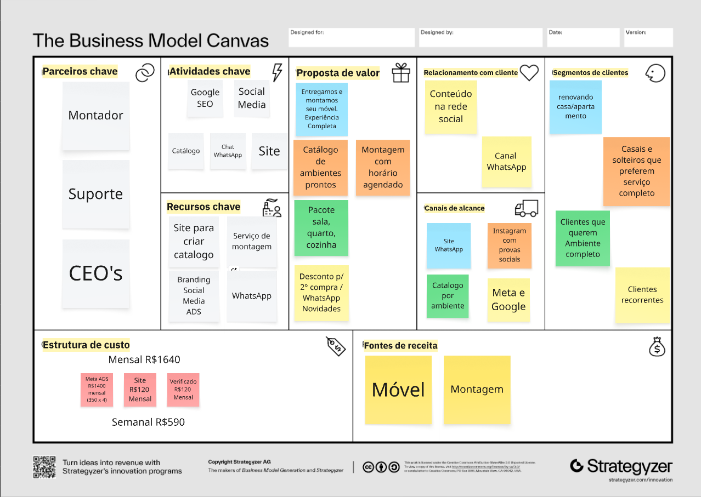
Artefato 02
Mapeamento das dores e ganhos do cliente carioca cruzado com a proposta de valor da Urso.
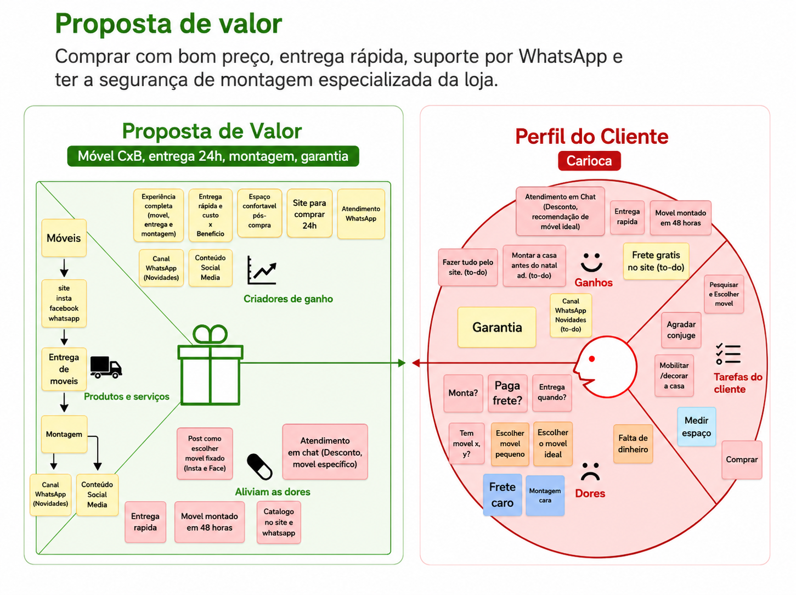
Artefato 03
Dois funis integrados com remarketing cruzado, dobrando a chance de conversão em cada canal.
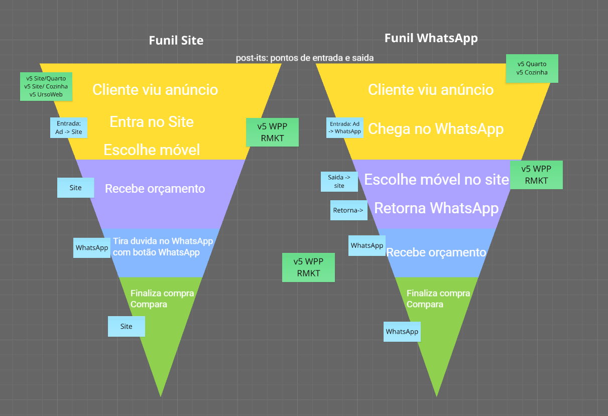
Artefato 04
Priorização do cadastro de produtos no catálogo: Quick Wins primeiro, Major Projects depois.

Artefato 05
Backlog priorizado por score de 1 a 13. Algumas dessas oportunidades ainda estão no forno. O trabalho continua.

🗺️ Roadmap
MVP: e-commerce funcional com catálogo, frete calculável, consulta de orçamento de montagem pelo site e integração WhatsApp. Tudo o que veio depois é melhoria contínua sobre essa base.
Os itens marcados com ✓ no backlog foram priorizados e já estão concluídos, implementados ao longo deste case. Os próximos no planejamento incluem campanhas de anúncio com produtos de ticket alto em formato de vídeo, o formato que mais converte para esse tipo de produto, com foco nas personas João & Leticia, que buscam móveis mais bonitos e de qualidade melhor para montar o lar completo.
Artefato 06
Durante todo o projeto, tive 100% de autonomia. Pesquisa, design, implementação: tudo decidido e executado por uma só pessoa: eu. Mas criar um serviço de montagem do zero exigia uma decisão que não era só minha. Então sentei com os donos da Urso, apresentei o problema, a solução e os resultados que poderíamos gerar.
Estrutura da apresentação
👆 Use as setas para navegar pelos slides
A precificação do serviço de montagem está no quadro do Miro, no último slide da apresentação acima.
2 personas reais + jornada de experiência + jornadas individuais.
Meu papel: Três anos como vendedor da Urso pelo WhatsApp me deram contato direto com os clientes. Oito meses de estudo em UX (e contando) transformaram esse conhecimento em personas e jornadas reais.
Artefato 01
João & Leticia (casal mudando de casa) e Pietra (renovando ambiente). Personas construídas a partir de atendimentos reais no WhatsApp. Como vendedor comissionado da Urso, tive contato direto com esses perfis de clientes e extraí os comportamentos, dores e motivações que estruturam cada persona.
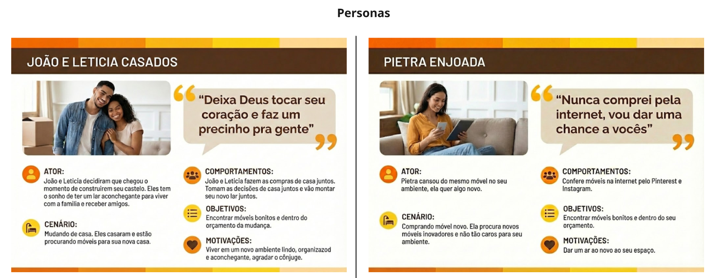
Artefato 02
Mapeamento com 3 atores: Cliente, Vendedor e Entregador. Cada etapa da jornada foi trabalhada com melhorias reais:

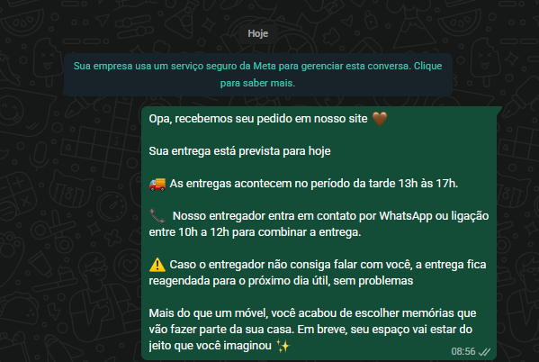
Artefato 03
5 fases com sentimentos, falas e oportunidades. O trabalho continua: estamos desenvolvendo campanhas para oferecer frete grátis em produtos de ticket alto, reduzindo a barreira de compra para esse perfil de cliente.

Artefato 04
Foco em renovação de ambiente e produtos de médio-baixo ticket.

Do sitemap ao design system. Decisões visuais documentadas.
Meu papel: Designer solo. Do rabisco frame ao design system completo, incluindo decisões de tipografia, cor e componentes implementados diretamente no tema Shopify.
Artefato 01
Estrutura completa das páginas: Landing Page, Categorias e Página do Móvel com todos os componentes mapeados.

Artefato 02
Sistema de cores com tokens: laranja primário #f2790e, marrom, bege e escala de cinzas. Todos com ratios de contraste WCAG.
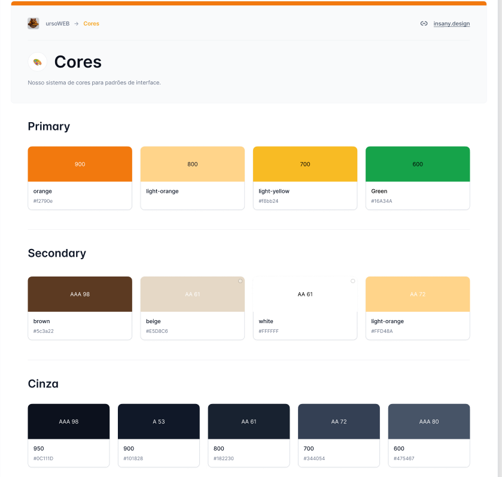
Artefato 03
Poppins para títulos e displays. Noto Sans Georgian para corpo de texto. Escala tipográfica de 80px até 18px.
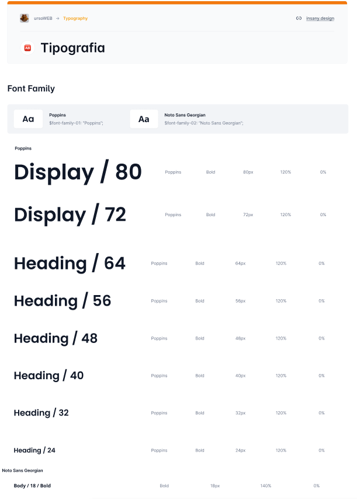
Artefato 04
Decisão de cor embasada em pesquisa cultural: laranja representa equilíbrio, coragem, energia, aprendizado e desejo.
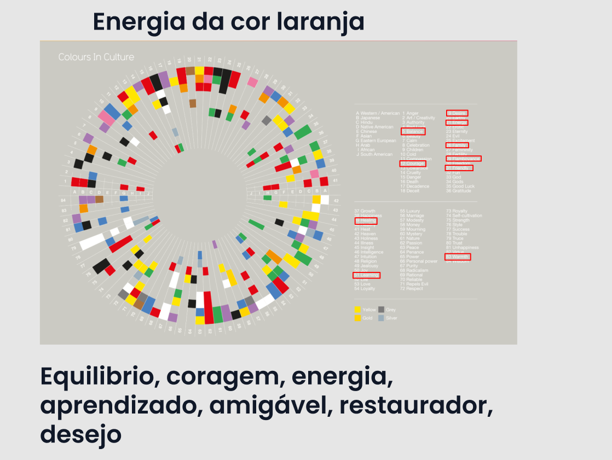
Artefato 05
Benchmark visual de e-commerces de móveis: padrões de layout, hierarquia de produto, filtros e prova social.

Artefato 06
Primeiro rascunho das telas. Exploração de layout antes de partir para o protótipo de alta fidelidade.
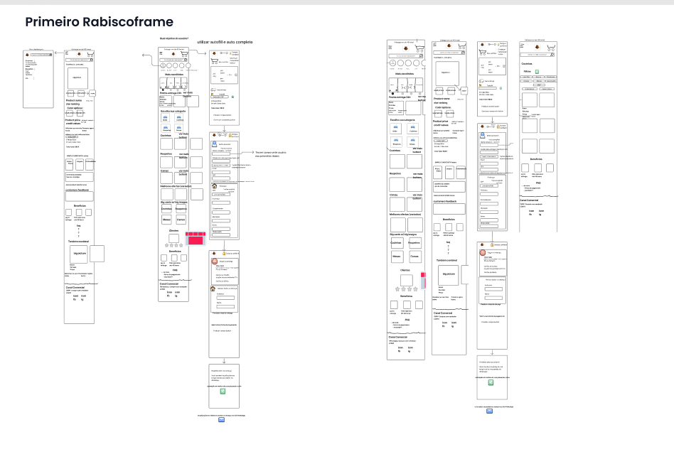
Artefato 07
Menu em lista simplificado para grid visual 3D com ícones por categoria. Menos opções visíveis, mais desejo e clareza de escolha.
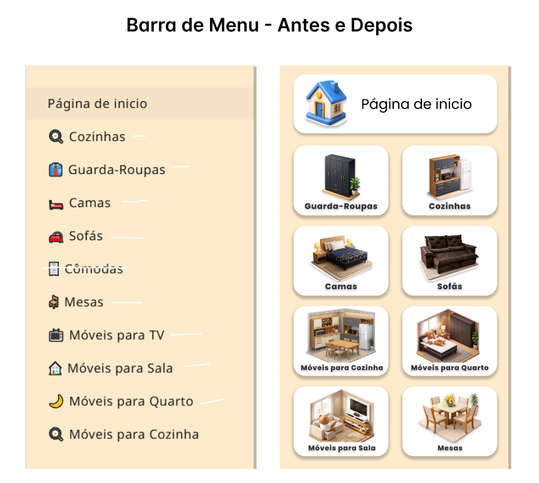
Shopify + Claude Code + ciclo contínuo de melhorias.
Meu papel: Atuei como copiloto. Descrevi as mudanças em português, revisei os outputs e validei cada alteração no ar. O Claude Code escreveu e aplicou o código Liquid e CSS.
Artefato 01
O Shopify centraliza hospedagem, pedidos, produtos, clientes, marketing, descontos, análises e Pixel para remarketing. Tudo num ambiente admin seguro e controlado.
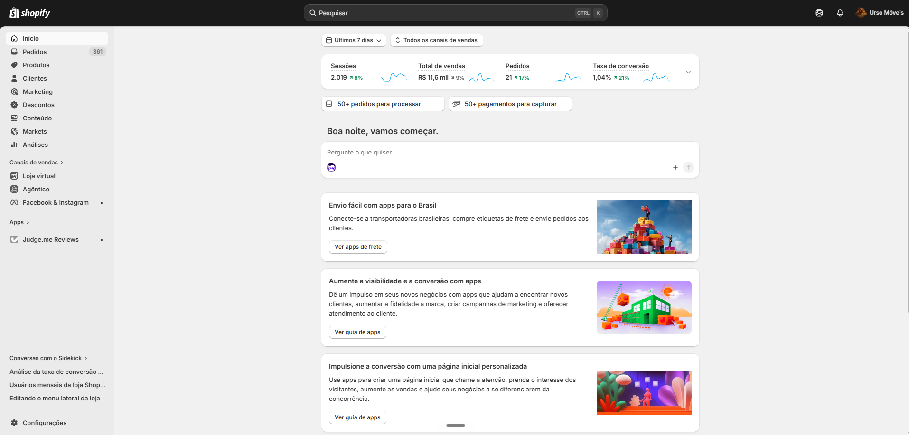
Canais ativos: Loja virtual · Agêntico · Facebook & Instagram · Judge.me Reviews
Artefato 02
Monitoramento do que os clientes buscam no site: revela oportunidades de catálogo e gaps de produto em tempo real.
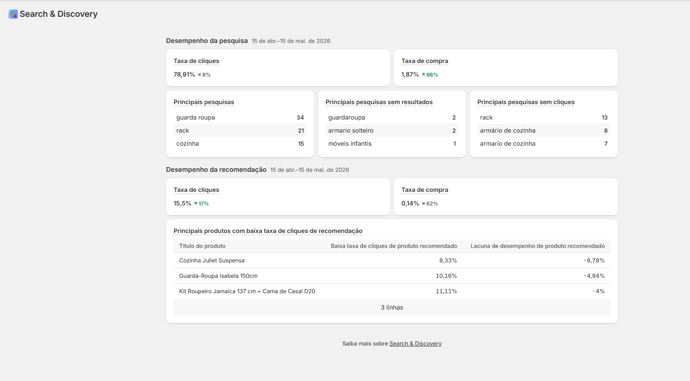
Taxa de cliques 78,91% ↑8% · Taxa de compra 1,87% ↑66% · Gaps: guardaroupa, armário solteiro, móveis infantis
Artefato 03
Fluxo de implementação contínua sem depender de agência:
por que isso importa pro CRO
Com esse ciclo, uma ideia de melhoria vai do pensamento ao ar em minutos. Botão em outro lugar, copy diferente, elemento removido: a gente testa rápido e segue com o que funciona.
Agentes criados no ChatGPT para aumentar o desejo pelo produto e o ranqueamento de SEO.
Meu papel: Criei e configurei os dois agentes do zero. Defini os prompts, testei os outputs e integrei ao fluxo operacional da loja como solução de escala.
Agente 01
É só jogar a foto do produto: o agente projeta o móvel num ambiente decorado, gerando desejo sem precisar de fotógrafo ou set.

valor gerado
Aumenta o desejo pelo produto com a imagem no ambiente, sem depender de fotógrafo ou set de decoração.
Agente 02
O agente lê a descrição técnica do produto e transforma em copy pronto para o site, negritando automaticamente os detalhes que mais influenciam a decisão de compra:
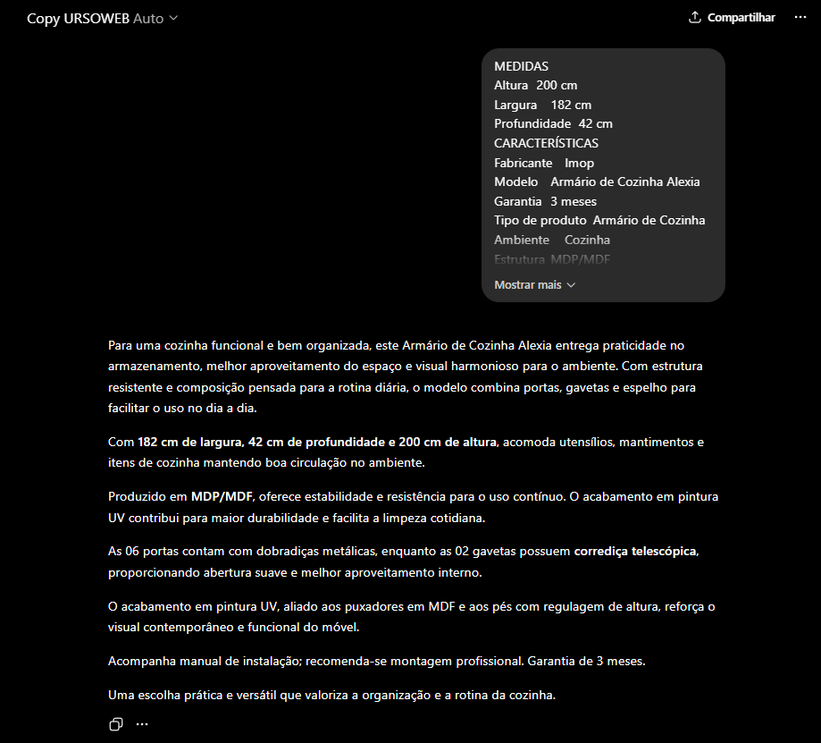
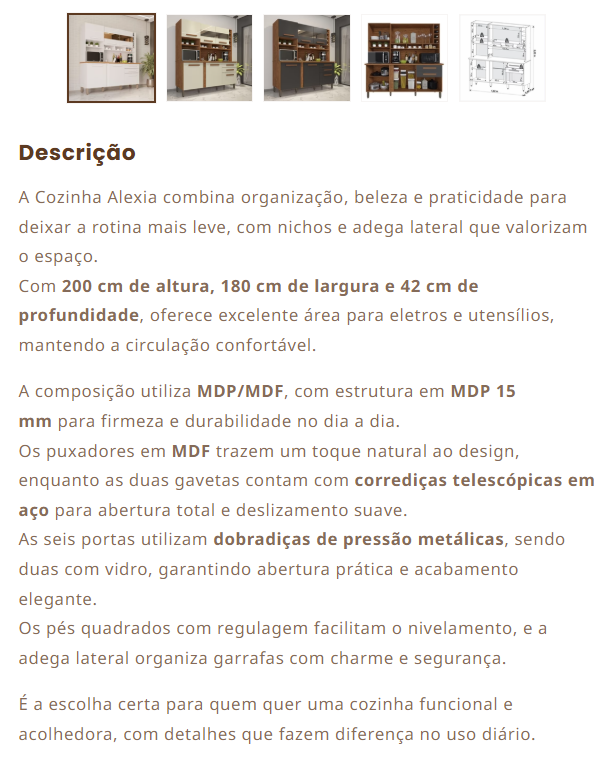
valor gerado
Aumenta o ranqueamento de SEO com a copy: cada produto novo já sai com descrição otimizada e destaques em negrito, sem esforço manual.
Case 02
Meu papel: Freela com escopo duplo: gestão de tráfego pago (Meta Ads) com campanha centrada em regatas NBA, camisas de futebol e streetwear, e criação e evolução contínua do site no Shopify. Da configuração da loja às melhorias de craft de UI mês a mês.
🔽 Funil de vendas do 1º mês
📅 Período: 12 jan a 12 fev de 2026 · Fonte: Shopify Analytics
Contexto
Loja física e online de roupas esportivas no Rio de Janeiro. Catálogo com futebol, NBA, streetwear e marcas como Jordan, Adidas e Lacoste. A campanha foi centrada em regatas NBA, camisas de futebol e streetwear ao longo dos últimos cinco meses.
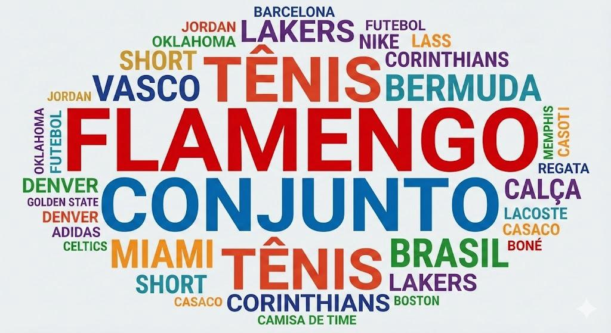
Design System
Paleta construída em cima da identidade Jordan: vermelho primário #F50402, preto e branco. Tipografia Montserrat Bold para títulos e Inter para corpo, reforçando a energia esportiva da marca.
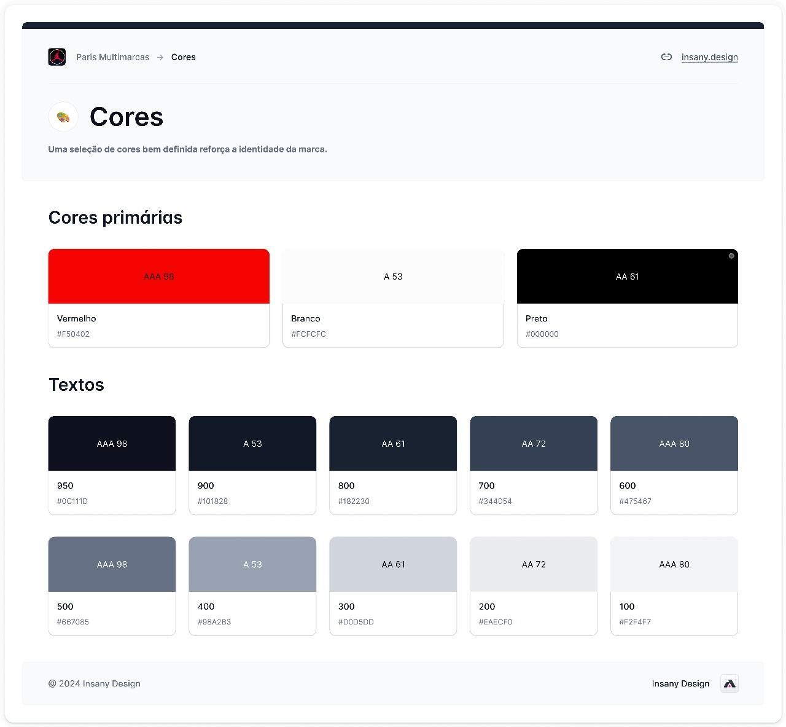
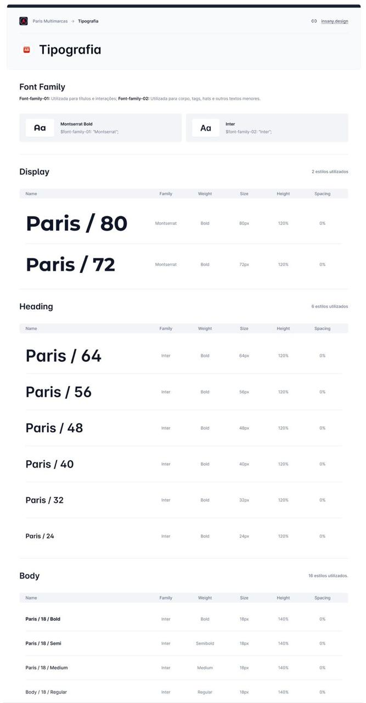
Decisão de UX
Um dos principais motivos de abandono em e-commerces de roupa é não saber o frete antes de chegar no checkout. Implementei uma calculadora de frete na página de produto integrada à API da Frenet, mostrando Sedex e PAC com prazo estimado antes do cliente adicionar ao carrinho.
Arquitetura: A integração usa um Cloudflare Worker como proxy, mantendo a chave da API Frenet escondida do cliente. Um cuidado de segurança importante: sem o proxy, a chave ficaria exposta no front-end e qualquer pessoa poderia extrair os dados internos da plataforma. O componente foi implementado diretamente no tema Shopify em Liquid e CSS, fruto de melhoria contínua do sistema.
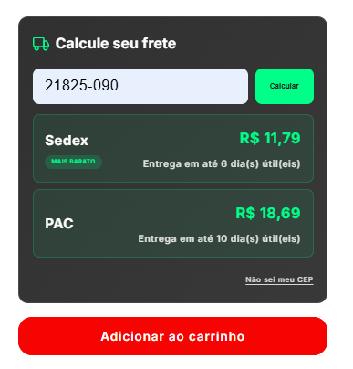
Impacto na jornada
Saber o frete antes do checkout reduz a fricção de descoberta e aumenta a confiança na decisão de compra. O cliente decide com mais segurança antes de adicionar ao carrinho.
Craft de UI
O site evoluiu progressivamente. Cada atualização foi documentada e comunicada ao cliente com versão numerada, criando transparência e ritmo de melhoria constante.
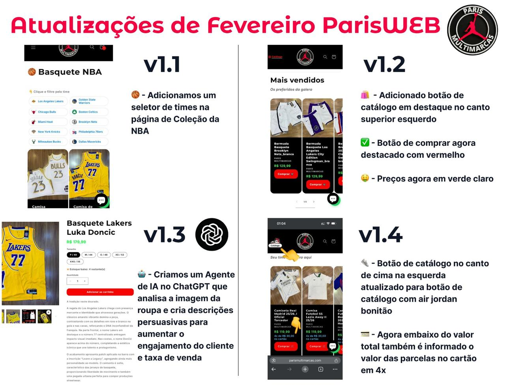
🏀 Seletor de times adicionado na página de coleção NBA: cliente filtra por Lakers, Bulls, Celtics e mais
🏬 Botão de catálogo em destaque · Botão "Comprar" em vermelho · Preços em verde claro para contraste
🤖 Agente de IA no ChatGPT que analisa a foto da roupa e gera descrições persuasivas automaticamente
🏷️ Botão de catálogo atualizado com logo Air Jordan · Valor das parcelas exibido abaixo do preço total
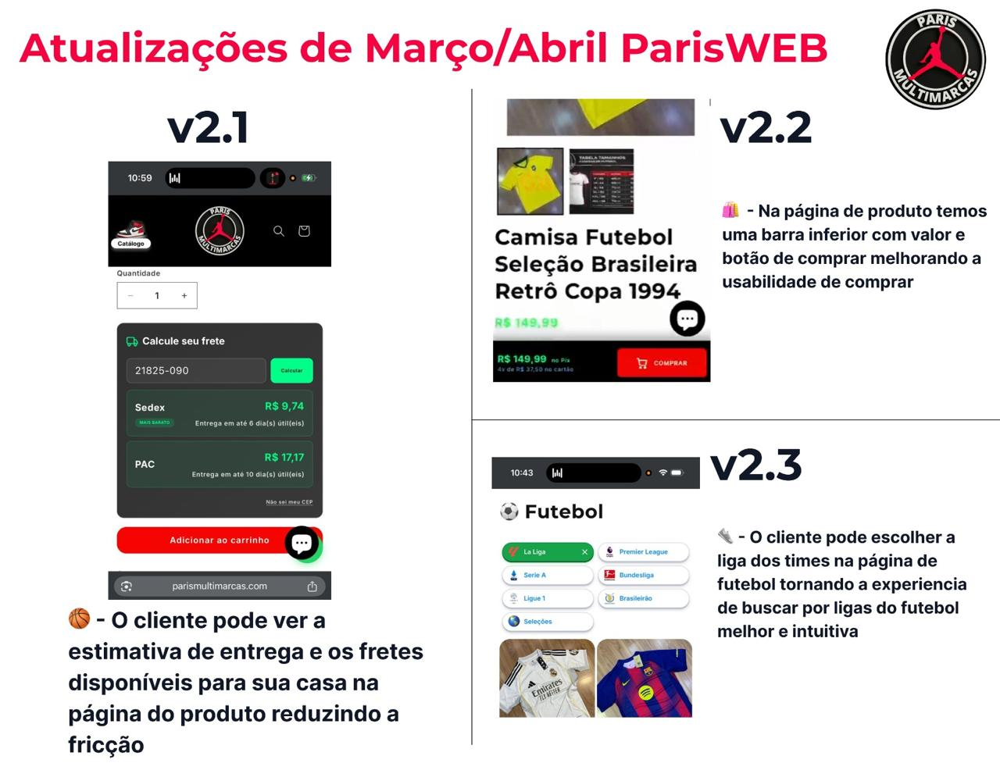
🏀 Calculadora de frete na página de produto: cliente vê Sedex e PAC com prazo antes de adicionar ao carrinho
🏬 Barra inferior fixa na página de produto com valor e botão de comprar, melhorando a usabilidade mobile
⚽ Seletor de ligas na página de futebol: La Liga, Premier League, Serie A, Bundesliga, Ligue 1 e Brasileirão. O cliente filtra por liga e encontra o time mais rápido
Resultados
Dados em atualização. Os números abaixo refletem a média acumulada desde o início do projeto em janeiro de 2026.
* Dados sendo atualizados · Fonte: Shopify Analytics + Meta Ads Manager
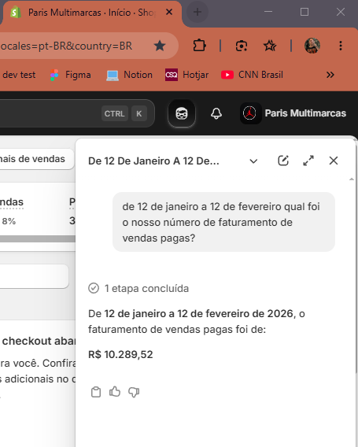